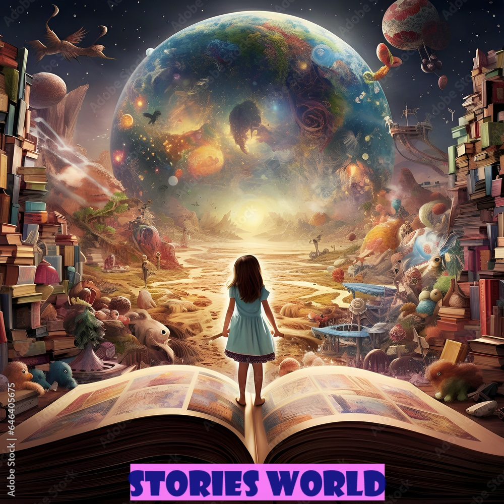
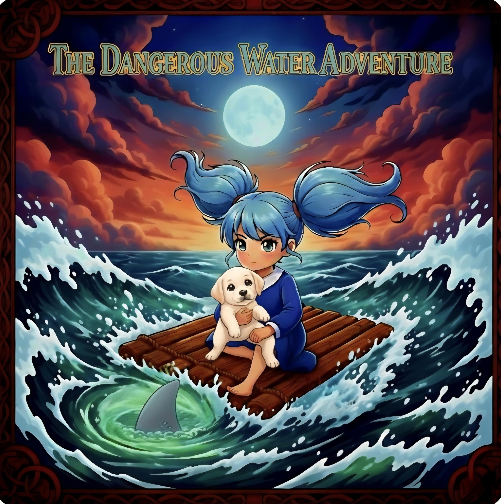
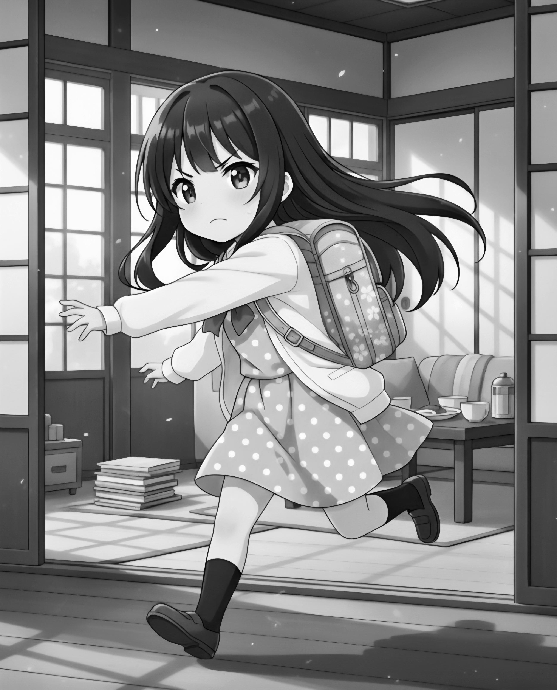
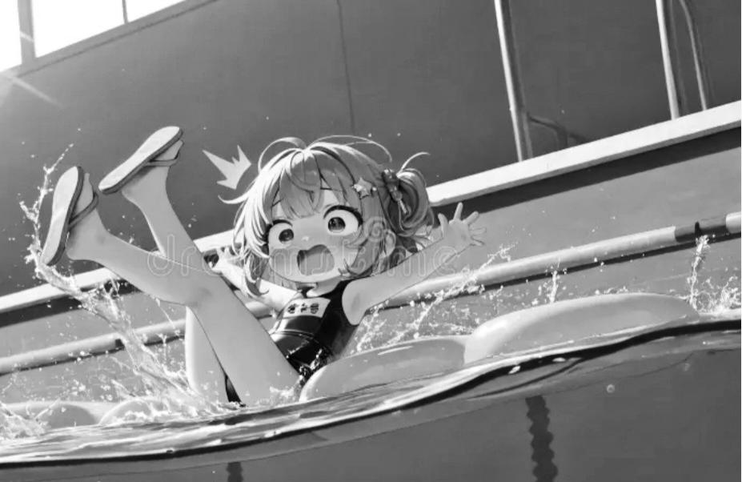
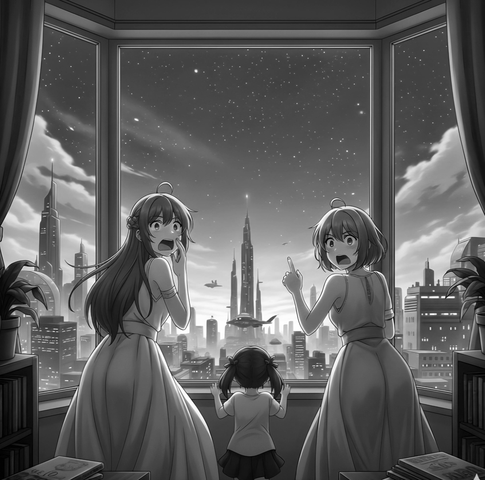
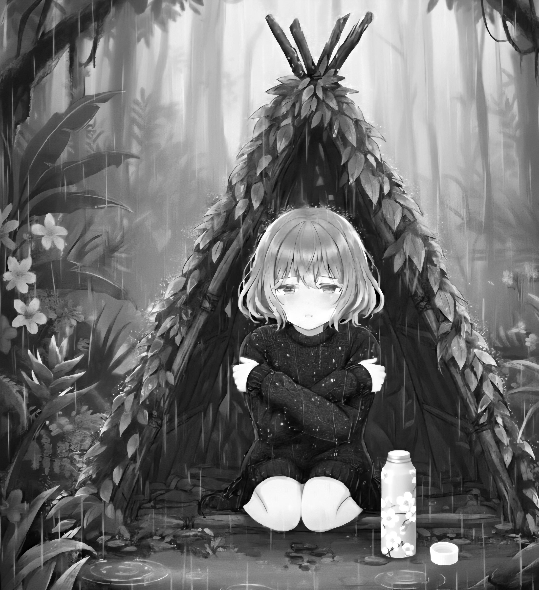
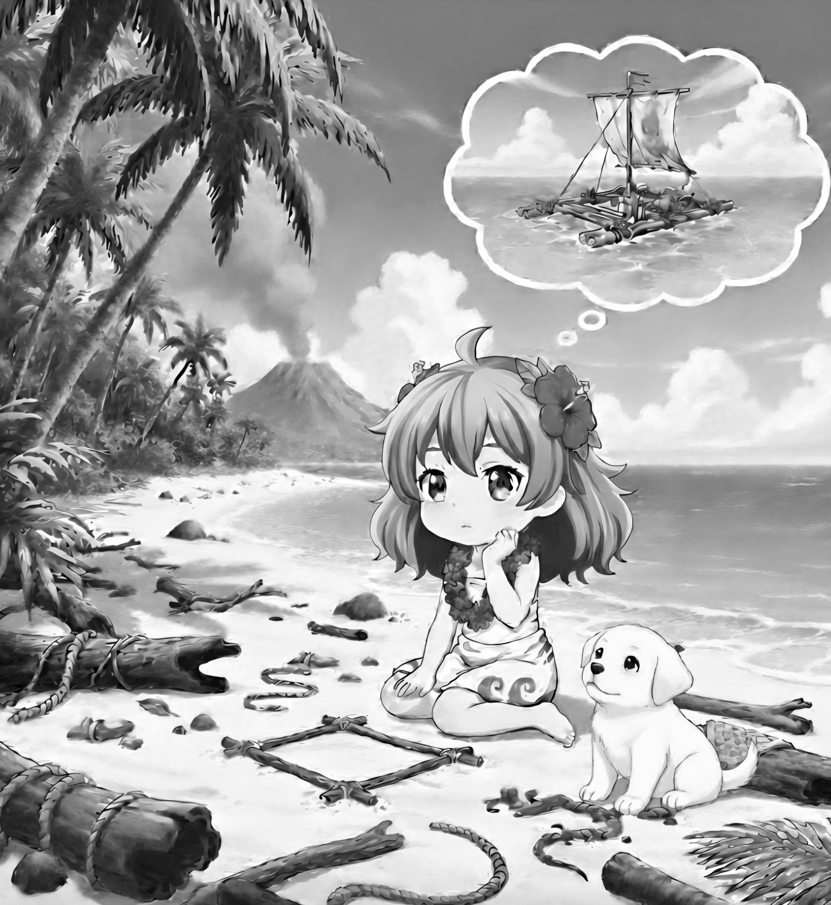
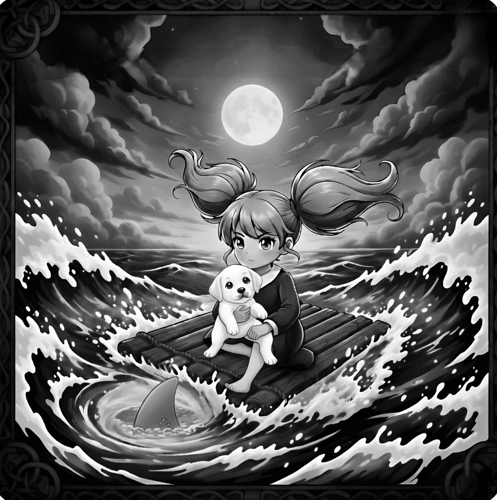
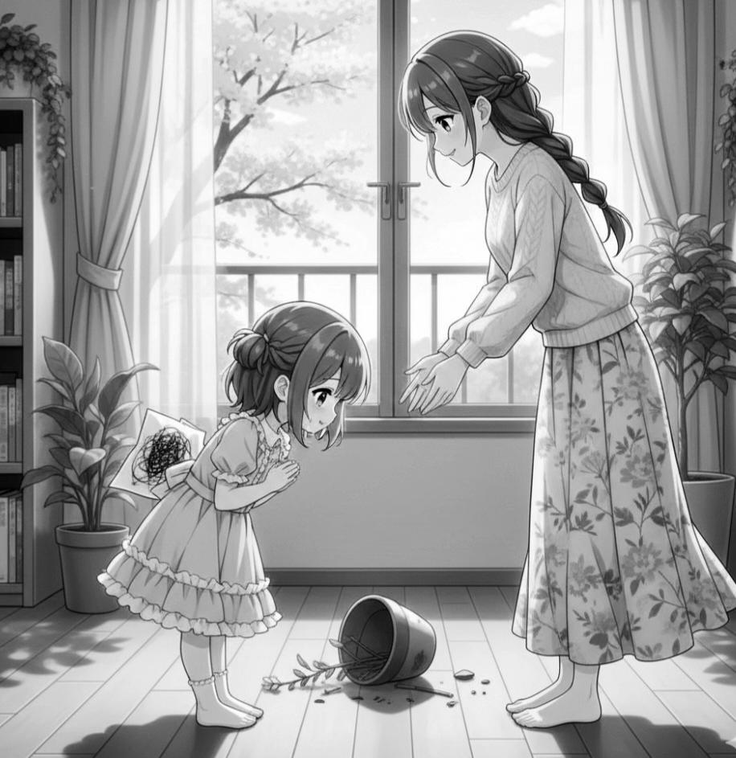
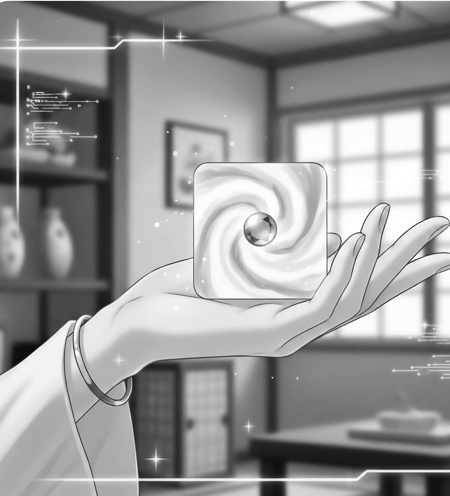

J.J.Stories

Author of story:JaiannahJones
Illustrated By: NicelinJones
Corrected by:Monica ansalam
These are moral stories from J.J stories. We kindly encourage you all to collect every books from series of J.J stories.
We all have disobeyed our parents in a way but have you ever faced the consequence in a way you didn’t expect? Michelline faced the same thing, a girl who is fun and energetic lost most of her energy by disobedience. “mom said that we should be there by 7am but it will take about 8 hours to get There and it’s already 6am ,we’re going to be late!” said Stacey running around the house in a rush when her mother Seleena shouted “ Stacey! What are you still doing there? we are already late, hurry up!” Yes mom I’m ready we can go” answered Stacey, but the danger haven’t started yet but it’s going to, soon .

At 7am, Stacey and her mother got on the train but it was a holiday therefore the station was over crowded and since the train had to stop at every station for the other passengers, it took an extra 2 hours to get there, it took about 5pm for seleena and Stacey to get There. While mailees was waiting at the swimming pool for seleena and Stacey, the two mother and daughter walked into the building being late, and when Mailees saw them she went and shouted “seleena! Why are you late? Didn’t I tell you the time you were supposed to be here?” Then seleena replied “I am sorry mailees, the train was over crowded which is why it took so long and my phone was switched off therefore it didn’t wake me up this morning” then Mailees answered calmly “ well thankfully we still have time for the pool let’s go we can’t waste any more time”. Everyone went to the swimming pool.
The two mothers and daughters were having fun for one hour when Mailees shouted “Michelline you have played in the pool enough, time to come out ”. But Michelline didn’t wanted to get out of the swimming pool so she said “ 5 more minutes mom” but her mother got angry and yelled “ if you don’t come here right now I will never bring you anywhere next time” but these words made Michelline angry and so she yelled at her mother . This made mailees heartbroken so she went inside, seeing this seleena told Michelline “ but you shouldn’t have said that Michelline , I knew your mother since I was 5 and she is a very sensitive person, you broke her heart”.
After the conversation ended, Stacey felt that something was wrong there in the pool. But Stacey didn’t say anything. But she silently went inside and when her mother saw that she immediately understood that something was wrong . So Seleena went out as well then she warned Michelline, “you better come out now or something bad might happen”. But Michelline didn’t listen after a few minutes Michelline noticed something weird when she saw magical blue spark, and it didn’t take that long for her to realize that she was getting sucked into the swimming pool!

Michelline got scared and started screaming for help and this sound attracted Mailees and Seleena but when they were about to go and check, Stacey stopped them and shouted “Wait! Don’t go or something bad might happen but we can watch from the window instead” And so they went to the window just to see the shocking seen of Michelline getting sucked into the swimming pool. After a few minutes Michelline disappeared then Stacey said ,”Now it’s safe to go out”.

After this terrifying incident, it was too much for Mailees that she got an heart attack and when seleena saw this she panicked and shouted “OMG! Mailees are you okay? Quick Stacey call an ambulance, I’ll go check what happened to Michelline”. When this was happening with mailees, Stacey and seleena, Michelline woke up in a strange place were she was floating around magical blue force, it was beautiful but Michelline got scared because she didn’t know what was going on.
After a few minutes the magical blue force brought her to an island with nothing but water and another problem was, Michelline didn’t know which island she was in! But there was water, so she decided to swim in the sea for a few minutes but when she was about to get in the water she noticed that it was way too deep for her so she dipped her body in the water making sure she doesn’t sink, after a half an hour, Michelline felt dizzy and she knew that it was not a good idea to stay in the water anymore so she got out.
Michelline sat under a neem tree thinking how could she escape the island, when Michelline came up with a huge problem, she didn’t remember if she saw the island she was stuck in at the time when she was studying about islands! When Michelline was thinking about this she noticed that it would take way too long for escaping. For a moment she thought “ I think I might need to make a shelter for me, and I also need to gather food as well, before I think about escaping” Michelline gathered some branches and leafs and made a triangular shaped shelter, then she went into the island looking for some food when she saw her favourite fruit, its a mango! Michelline marked the mango tree and took some fruits when she noticed that it was about to rain therefore she went to her shelter and opened her bottle which had a beautiful white and baby pink blended colour contrast cherry blossom design, waiting for rain, it was cold but she knew that water important now.

When this was happening with in Michelline In the island while on the real world Seleena was thinking about the problems of Michelline‘s disappearance, how are they going to explain this to Michelline‘s dad Mr. Maverick and what about Mailees she is the one who is weak but also heartbroken of Michelline‘s disappearance! When suddenly Stacey went to the pool but when her mother saw this she noticed that something was wrong so she followed Stacey, Stacey sat near the swimming pool murmuring and when her mother seleena saw her she quietly listened and was terrified of what she heard “oh no why did this had to happen in front of aunt Mailees and mother seleena now they might find my secret, I should make sure that they would not suspect anything” when Seleena heard this Seleena thought, “oh dear I don’t understand what’s going on, what in the world my daughter is hiding everything thing is out of hand I don’t know what to do anymore ”.
On the other hand the rain stopped in the Island where Michelline was stuck in but it was 8pm in the Island and since Michelline was already tired of making the shelter and gathering food, she had wasted some of her energy by swimming in the ocean that she fallen asleep without closing her bottle. The next day Michelline woke up finding her bottle empty she was heartbroken, she worked hard yesterday just to find her bottle empty? Michelline sat down and started weeping when she heard a small sound it was like a small animal cry or perhaps a puppy, Michelline noticed that the sound was coming from a bush so she went and looked there and to her surprise it was the world’s second friendliest dog a Labrador puppy!, it was one of her dreams to have a Labrador puppy and Michelline found out that this puppy was the creature which drank all her water but since she loved puppies especially a female puppy so she named the puppy Andria
Michelline took the puppy inside her small shelter and went out looking for food for her puppy Andria and herself when she found some planks of wood suddenly she had an idea and she said to her self “ I think I might have an idea, I could make a small raft for me and Andria and we might even have a chance to escape this island!”. So that’s what they did, Michelline made the raft while Andria, Michelline‘s puppy gathered vines to hold the wood planks in place. And when the raft was ready, Michelline gathered her courage and said “ I think I am ready to do this and I have to if I want get back to Leland”. Michelline knew that she had to escape the island somehow.

While on the real world, both the families were dipped in with problems thinking of what to do when suddenly they heard a knock, Mailees froze for a second because she knew who was out there. “ Mailees! Open the door, Mr. Scarcer is hear with me, what is going on?” It was Mr. Maverick, Michelline‘s father and Stacey’s father Mr. Scarcer was also there but Michelline‘s father was very angry, their shout echoed in the building, and Mailees was trembling in fear when seleena asked “ Mailees, Mailees what are doing here ? Wait, I’ll go check who’s there” Mr. Maverick stormed into the room shouting, “Mailees! I heard that Michelline disappeared, I told you to not go to this trip, I don’t have enough money but you didn’t listen and now we have to spend money to find our daughter, see what have you done” Mr. Maverick was shouting at Mailees when Stacey was typing something in a really special laptop which wasn’t given nor gifted to her from her parents nor her friends,or her family memebers, her family members, the laptop had special things that couldn’t be made by a normal human. Stacey whispered “ Hey Michelline, after you comeback to Leland no one will remember that you disappeared.
he next day, Michelline and her puppy, Andria got on the raft but Michelline didn’t know how to make a paddle therefore she had no idea of where she was going !, her only hope was in the sea and the raft. Suddenly it started raining and the wind was enough to make the sea rough and the raft started shaking, Michelline hold her puppy Andria tighter, Michelline was about to scream when she saw a shark under the raft, it was a great white shark therefore she silently watched and made sure that the puppy stays silent as well, after a few hours, the rain stopped and the wind stopped blowing and the shark didn’t notice them but the raft didn’t last and they started sinking, Michelline cried and shouted for help but no one came then she regretted disobeying her mother “ help someone, help we are sinking help, oh I wish that I listened to my mom and came out when she said itself but I didn’t even listen when aunt Seleena warned me I wish I get a second chance”. As soon as Michelline said this the magical blue force appears again and took Michelline back to Leland and the first thing she did was apologising to her mother Mailees and aunt Seleena .

But nobody remembered if Michelline ever disappeared. The next day Michelline found a note and it said “hi Michelline, wondering how nobody remembered that you disappeared? I’m waiting to see what your next adventure. By Stacey”. When suddenly Mailees walked into the room asking “hey Michelline, what are you ready?” Uh ... Nothing mom” answered Michelline “ well, carry on I have to finish cooking .”

At evening 4 am Michelline found a small device which was in a square shape and the colours of the device was pink and white blended with a small violet colour circle in the middle, suddenly it disappeared into smoke, then Michelline said to herself “ so, is this the one which took me to that island?” but what does the island and the device have to do with Stacey?, is she even a human? What will happen with Michelline next?.

In this story Michelline did not obey to her parent Mailees.So she faced a lot of problems.When she realised her disobeyness she came back to Leland.After she cameback she oppolagise her mistakes with her Mom.So children you have to obey your parents,Teachers and eldors.